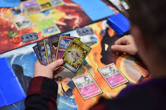
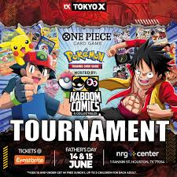
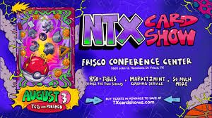
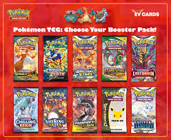

Collectible Card Games
Collect, trade, and battle your way to the top!
What are Collectible Card Games?
A Collectible Card Game (CCG), also called a Trading Card Game (TCG), is a hobby that combines the thrill of collecting with the strategy of a card game. Players build decks from hundreds or even thousands of unique cards, then compete against friends or in official tournaments using those decks.
Each card has its own artwork, abilities, and stats, making every card feel special. Part of the excitement is the hunt — opening booster packs and discovering rare cards never gets old, whether you are seven or seventy! Some cards also become valuable collectibles worth real money over time, adding an extra layer of excitement to the hobby.

Popular Card Games
- Pokémon TCG – Catch 'em all in card form! Battle with fan-favorite Pokémon. Great for all ages, especially kids. Each pack contains 10 cards.
- Magic: The Gathering (MTG) – The original CCG, first released in 1993. Thousands of cards across many formats — from casual kitchen table games to world-championship tournaments.
- Yu-Gi-Oh! – Fast-paced dueling with monsters, spells, and traps. Inspired by the beloved anime series. Very popular with kids and teens.
- Disney Lorcana – A newer game featuring beloved Disney characters. Simple to learn and perfect for the whole family.
- One Piece TCG – Based on the hit anime and manga. Fast-growing community and beautiful card art.
Card Rarity Guide
Most CCGs use a rarity system to show how hard a card is to find. Here is a general breakdown used across many games:
| Rarity | Symbol | How Common? |
|---|---|---|
| Common | ⚪ Circle | Every pack has several |
| Uncommon | 🔷 Diamond | A few per pack |
| Rare | ⭐ Star | Usually 1 per pack |
| Holo Rare | ✨ Sparkle | Shiny! About 1 per pack |
| Ultra Rare / Secret | 🌟 Gold Star | Very hard to find |
Getting Into the Hobby
Start with a Starter Deck
Pre-built starter decks are the easiest entry point. They come ready to play right out of the box for around $10–$15.
Open Booster Packs
Booster packs contain random cards — the thrill of not knowing what's inside is half the fun! Each pack typically costs $4–$6.
Protect Your Cards
Card sleeves and binders keep your collection safe. A set of 100 sleeves costs just a few dollars and is well worth the investment.
Find Your Local Game Store
Local game stores (LGS) host weekly events like Friday Night Magic (MTG) and Pokémon Leagues, where you can meet other players and trade cards.
Card Condition & Grading
If you plan to collect valuable cards, understanding card condition is important. Here is how collectors rate card condition:
- Mint (M) – Perfect condition, never played. Corners are sharp, surface is flawless.
- Near Mint (NM) – Nearly perfect with only the tiniest signs of handling. This is what most people aim for.
- Lightly Played (LP) – Minor wear like small scratches or slight edge wear. Still looks great.
- Moderately Played (MP) – Noticeable wear. Fine for casual play but lowers the card's value.
- Heavily Played (HP) – Significant wear, creases, or discoloration. Usually used only in casual settings.
Professional grading services like PSA and Beckett will officially grade rare cards and seal them in a protective case, which can greatly increase their value.
Upcoming Events
The TCG community comes together at events throughout the year. Here are some types of events to look for near you:

Local Tournament Scene
Card Show / Convention
Opening Booster Packs| Event Type | Games | Difficulty |
|---|---|---|
| League Play | Pokémon, MTG, Yu-Gi-Oh! | All levels welcome |
| Pre-release Event | MTG, Pokémon, Lorcana | Beginner-friendly |
| Regional Championships | Most games | Competitive |
| Card Shows & Conventions | All games / collecting | Casual / family-friendly |
Useful Links
- Pokémon TCG Official Site – Rules, cards, and find events near you
- Magic: The Gathering – Card database, deck builder, and store locator
- Yu-Gi-Oh! Official Site – Rules, news, and tournaments
- TCGPlayer – Buy, sell, and check card prices